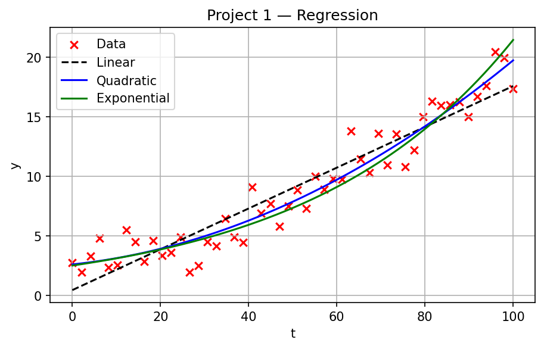
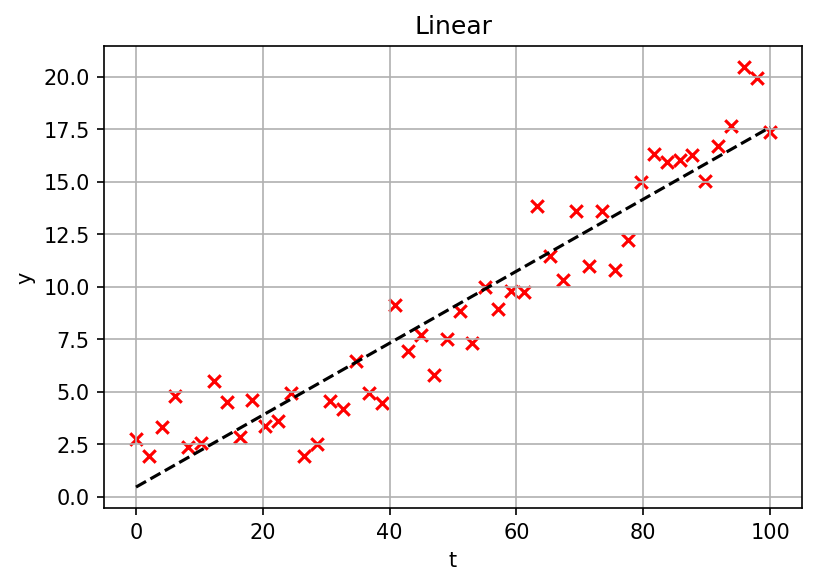
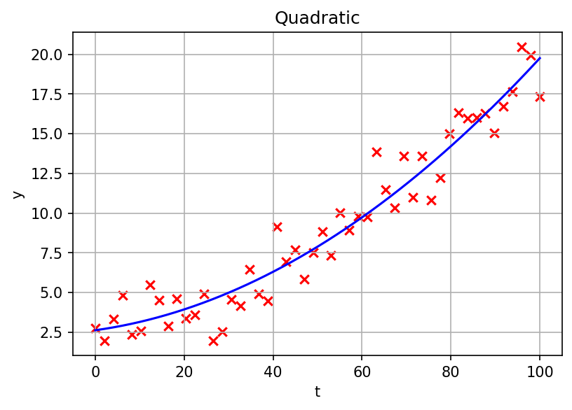
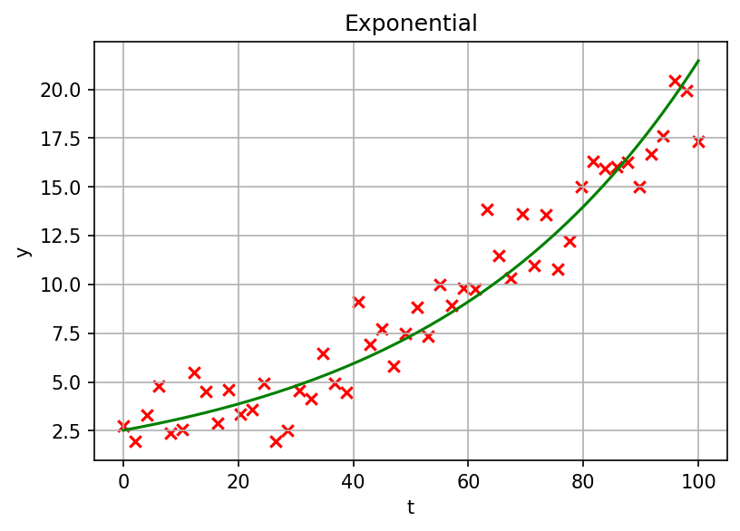
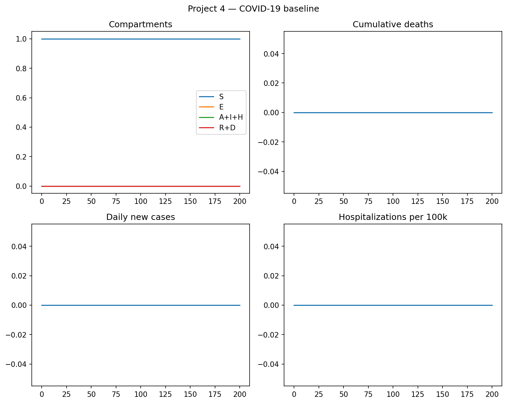
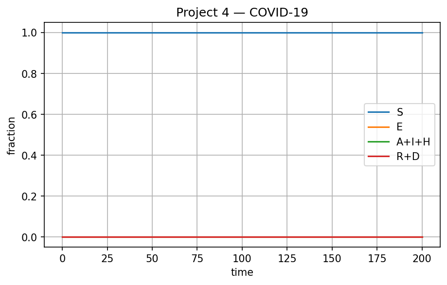
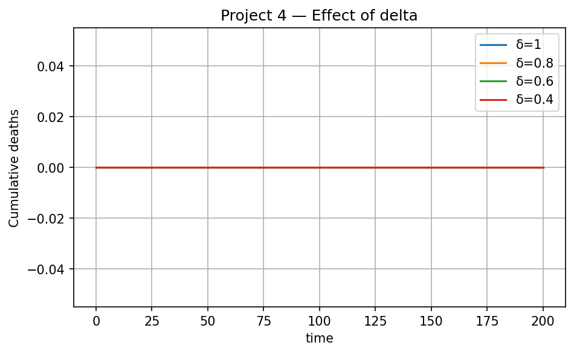
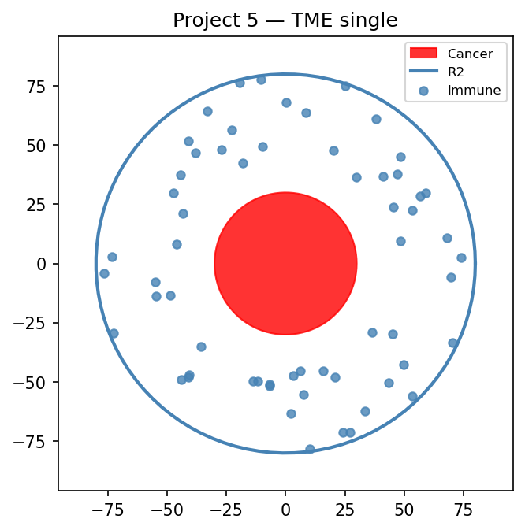
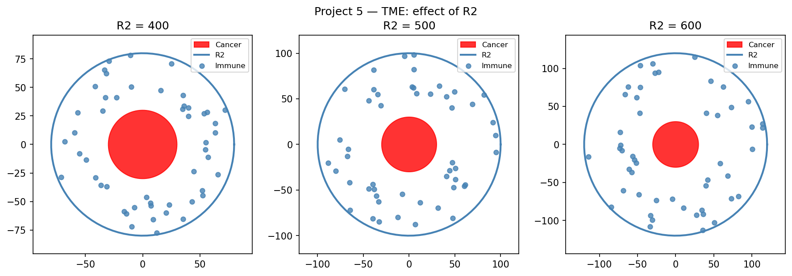

Project 1 — Regression & model comparison
Linear, quadratic, and exponential fits to time-series data; R² and least-squares. Applied to biomass and growth curves.
- Least squares
- R²
- Model selection




Project 2 — Flux balance analysis
Maximize biomass subject to stoichiometric balance S·v = 0. E. coli core–style metabolism; aerobic vs anaerobic and knockout sensitivity.
- Linear programming
- Stoichiometric matrix
- FBA

Project 3 — Tumor growth ODE
Multi-compartment tumor model with drug PK. Runge–Kutta integration; tumor weight vs time under different doses.
- ODE systems
- RK4 / numerical integration
- Pharmacokinetics
Project 4 — COVID-19 compartmental model
SEIR-type dynamics: S, E, A, I, H, R, D. R₀ and intervention (contact reduction); hospitalization and cumulative deaths.
- Epidemic modeling
- R₀
- Compartments



Project 5 — Tumor microenvironment
Spatial layout of cancer cells, effector T cells, and macrophages. Parameter R2 (outer radius) tunes immune cell distribution to capture different TME phenotypes.
- Spatial modeling
- Immune infiltration
- Parameterized geometry

